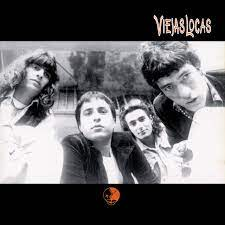

Viejas Locas
Viejas Locas es una banda argentina de rock que se formó en la década de 1990 en la ciudad de Buenos Aires. La banda está compuesta por Pity Álvarez (voz y guitarra), Abel Meyer (guitarra), Diego Arnedo (bajo) y Federico Pertusi (batería).
La música de Viejas Locas se caracteriza por su potencia y energía, con fuertes influencias de bandas de rock como AC/DC y Guns N' Roses. Las letras de las canciones son en su mayoría introspectivas y oscuras, abordando temas como la violencia, el amor, la soledad y la adicción.
El primer álbum de Viejas Locas, "Viejas Locas", fue lanzado en 1995 y tuvo un gran éxito en Argentina, especialmente con la canción "Me Gustas Mucho". El segundo álbum, "Hermanos de Sangre", fue lanzado en 1997 y también fue muy bien recibido.
La banda se separó en 2000, pero Pity Álvarez formó otra banda llamada Intoxicados, que se convirtió en un gran éxito en la escena del rock argentino. En 2009, Viejas Locas se reunió para hacer una serie de conciertos en vivo, y en 2010 lanzaron un nuevo álbum titulado "Especial".
Sin embargo, en los últimos años, Pity Álvarez ha tenido problemas con la justicia y ha estado en prisión. La banda se encuentra actualmente en un receso indefinido, pero su música sigue siendo muy popular en Argentina y ha influido en muchas bandas de rock argentinas posteriores.